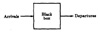
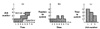
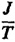
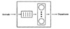
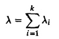
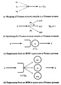
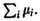
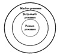

30.3 LITTLE’S LAW
One of the most commonly used theorems in queueing theory is Little’s law, which allows us to relate the mean number of jobs in any system with the mean time spent in the system as follows:
Mean number in the system = arrival rate × mean response time
This relationship applies to all systems or parts of systems in which the number of jobs entering the system is equal to those completing service. Little’s law, which was first proven by Little (1961), is based on a black-box view of the system, as shown in Figure 30.3. The law applies as long as the number of jobs entering the system is equal to those completing service, so that no new jobs are created in the system and no jobs are lost forever inside the system. Even in systems in which some jobs are lost due to finite buffers (see Section 31.4), the law can be applied to the part of the system consisting of the waiting and serving positions because once a job finds a waiting position (buffer), it is not lost. The arrival rate in this case should be adjusted to exclude jobs lost before finding a buffer. In other words, the effective arrival rate of jobs entering the system should be used.

FIGURE 30.3 Black-box view of a system.

FIGURE 30.4 Three ways to plot the arrival and departure time data.
In this section we present a simple proof of the law.
- Proof 30.1 Suppose we monitor the system for a time interval T and keep a log of arrival and departure times of each individual job. If T is large, the number of arrivals would be approximately equal to the departures. Let this number be N. Then
Arrival rate=total arrivals/total time = N/T
- As shown in Figure 30.4, there are three ways to plot the data that we just gathered. Figure 30.4a shows the total number of arrivals and departures separately as a function of time. If at each time instant we subtract the departure curve from the arrival curve, we get the number of jobs in the system at that instant, as shown in Figure 30.4b. On the other hand, if we subtract the arrival time from departure time for each individual job, we get Figure 30.4c for time spent in the system. The hatched areas in the three parts of the figure represent total time spent inside the system by all jobs. Hence, all three hatched areas are equal. Let this area be J. From Figure 30.4c
Mean time spent in the system = J/N
- From Figure 30.4b
- Mean number in the system = 
- = arrival rate × mean time spent in the system
This is the Little’s law.
Notice that Little’s law can be applied to any system or subsystem. For example, by applying it to just the waiting facility of a service center (see Figure 30.5), we get

FIGURE 30.5 Little’s law can be used for a system or any part of the system.
Mean number in queue = arrival rate × mean waiting time
Similarly, for those currently receiving the service, we have
Mean number in service = arrival rate × mean service time
Example 30.3 A monitor on a disk server showed that the average time to satisfy an I/O request was 100 milliseconds. The I/O rate was about 100 requests per second. What was the mean number of requests at the disk server?
- Using little’s law,
- Mean number in the disk server=arrival rate × response time
- =(100 requests/second) × (0.1 second)
- =10 requests
30.4 TYPES OF STOCHASTIC PROCESSES
In analytical modeling, we use not only several random variables but also several different sequences or families of random variables that are functions of time. For example, let n(t) denote the number of jobs at the CPU of a computer system. If we take several identical systems and observe the number of jobs at the CPU as a function of time, we would find that the number n(t) is a random variable. To specify its behavior, we would need to specify the probability distribution functions for n(t) at each possible value of t. Similarly, the waiting time in a queue w(t) is a random function of time. Such random functions of time or sequences are called stochastic processes. Such processes are useful in representing the state of queueing systems. Some of the common types of stochastic processes used in queueing theory are explained next:
- 1. Discrete-State and Continuous-State Processes: A process is called discrete or continuous state depending upon the values its state can take.
If the number of possible values is finite or countable, the process is called a discrete-state process. For example, the number of jobs in a system n(t) can only take discrete values 0, 1, 2, .... Therefore, n(t) is a discrete-state process. The waiting time w(t), on the other hand, can take any value on the real line. Therefore, w(t) is a continuous-state process. A discrete-state stochastic process is also called a stochastic chain.
- 2. Markov Processes: If the future states of a process are independent of the past and depend only on the present, the process is called a Markov process. The Markov property makes a process easier to analyze since we do not have to remember the complete past trajectory. Knowing the present state of the process is sufficient. These processes are named after A. A. Markov, who defined and analyzed them in 1907.
- A discrete-state Markov process is called a Markov chain.
Notice that to predict the future of a continuous-time Markov process, it is sufficient to know the current state. It is not necessary to know how long the process has been in the current state. This is possible only if the state time has a memoryless (exponential) distribution. This requirement limits the applicability of Markov processes.
As shown later in Section 31.3, M/M/m queues can be modeled using Markov processes. The time spent by a job in such a queue is a Markov process and the number of jobs in the queue is a Markov chain.
- 3. Birth-Death Processes: The discrete-space Markov processes in which the transitions are restricted to neighboring states only are called birth-death processes. For these processes, it is possible to represent states by integers such that a process in state n can change only to state n + 1 or n – 1. For example, the number of jobs in a queue with a single server and individual arrivals (not bulk arrivals) can be represented as a birth-death process. An arrival to the queue (a birth) causes the state to change by +1 and a departure after service at the queue (a death) causes the state to change by – 1.
- 4. Poisson Processes: If the interarrival times are IID and exponentially distributed, the number of arrivals n over a given interval (t, t + x) has a Poisson distribution, and therefore, the arrival process is referred to as a Poisson process or a Poisson stream. The Poisson streams are popular in queueing theory because the arrivals are then memoryless as the interarrival time is exponentially distributed. In addition, Poisson streams have the following properties:
- (a) Merging of k Poisson streams with mean rate λi results in a Poisson stream with mean rate λ given by

- This is shown schematically in Figure 30.6a.

FIGURE 30.6 Properties of Poisson processes.
- (b) If a Poisson Stream is split into k substreams such that the probability of a job going to the ith substream is pi, each substream is also Poisson with a mean rate of piλ, as shown in Figure 30.6b.
- (c) If the arrivals to a single server with exponential service time are Poisson with mean rate λ, the departures are also Poisson with the same rate λ, as shown in Figure 30.6c, provided the arrival rate λ is less than the service rate µ.
- (d) If the arrivals to a service facility with m service centers are Poisson with a mean rate λ, the departures also constitute a Poisson stream with the same rate λ, provided the arrival rate λ is less than the total service rate  Here, the servers are assumed to have exponentially distributed service times. This is shown in Figure 30.6d.
The relationship among various types of stochastic processes is summarized in Figure 30.7.

FIGURE 30.7 Relationship among various stochastic processes.
EXERCISES
- 30.1 What can you say about a queue denoted by Ek/G[x]/5/300/5000/LCFS-PR?
- 30.2 Why is it not a good idea to have an Hk/G/12/10/5/LCFS queue?
- 30.3 Which queueing system would provide better performance: an M/M/3/300/100 system or an M/M/3/100/100 system?
- 30.4 During a 1-hour observation interval, the name server of a distributed system received 10,800 requests. The mean response time of these requests was observed to be one-third of a second. What is the mean number of queries in the server? What assumptions have you made about the system? Would the mean number of queries be different if the service time was not exponentially distributed?
- 30.5 When can the arrivals to an Ek/M/1 queue be called a Poisson process?
){kind=link}
){kind=link}
){kind=link}
){kind=link}
){kind=link}
){kind=link}
){kind=link}
){kind=link}
){kind=link}
){kind=link}